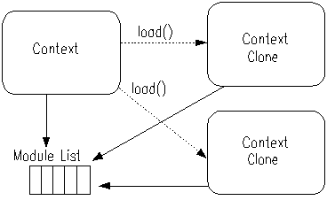
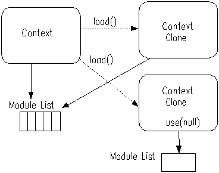

The most common style of Pnuts programs is sequence of expressions. When a script is executed, expressions in the script are evaluated one by one and the result of the last expression becomes the result of the whole execution.
expression 1 expression 2 ... expression n
Pnuts can create Java classes without compiling programs to bytecode explicitly. A scripted class file, which has a common file name extension '.pnc', is compiled and loaded by a specialized class loader when it is needed.
class A {
int field_1 = 0
int method (parameter){
...
}
}
The details of class definition syntax is described in section 4.
Expression is the smallest program unit in the Pnuts language. When an expression is evaluated, it returns an object as the result.
An expression consisting of an identifier is a variable reference. The value of the variable reference is the value stored in the location to which the variable is bound. Variables have no static type; i.e. arbitrary objects can be the value. A variable is created when assignment to the identifier first occurs in a certain variable scope.
year = 2002
Function is defined by the name, a parameter list, and a sequence of expressions. Function is first class object, that is, functions can be assigned to a variable.
function double(n) {
n * 2
}
Functions are identified by the name and the number of formal parameters. Functions of the same name are grouped into one entity which is referenced by the name. When a function is called, specifying the function name and actual arguments, first the function group of the name is referenced, then Pnuts runtime system searches a function definition that matches the number of arguments. If the function is found, it is executed with the given arguments.
Functions can be nested and have static (lexical) scope.
function f(){
x = 0
function set(value) x = value
function get() x
::set = set
::get = get
}
f()
set(100)
get() ---> 100
f()
get() ---> 0
function inc(x) ++x function abs(x) if (x < 0) -x else x function compose (f1, f2) return (function (x) f1(f2(x))) compose(inc, abs)(-100) ---> 101 compose(abs, inc)(-100) ---> 99
Package provides a name space for variables and functions. Every function and variable belongs to a package. There is always a package which is called "current package".
Functions are executed in the package in which the functions are defined.
Packages can have a parent package. When a read access to a package variable occurs, the value is returned if it is defined in the package. If not, Pnuts runtime tries to find it from its parent package.
Write access has nothing to do with package hierarchy. When a write access occurs, the value is written to the target package, regardless of the package hierarchy.
The package that has no parent is called a root package. The default root package is called gloabl package.
The function package(name) creates a package that the global package is its parent package, except that the global package has no parent package. When the parameter of package() function is a string separated by the delimiter "::", the corresponding package hierarchy will be created.
Module is a set of reusable scripts which can be utilized by calling the use() builtin function . User can choose necessary modules at run time, so that he/she can take advantage of existing modules, reducing the possibility of name confliction.
Each module is usually packaged into a JAR file, which might be added to CLASSPATH or copied to ${PNUTS_HOME}/modules/.
Module is implemented as an extension to a package. Module has one-to-one relationship with Package. Names (functions/variables) exported by a module are defined in a certain package.
So why module is useful? To reference an object in a package by its name, you have to change the current package to the package. If there are many packages each of which defines different names, you would have to change the current package very often in order to reference the objects by those names, which is not practical.
Names in a module can be referenced by their names, when the module is used in the context, no matter which package is selected as the current package.
Initialization Script
When use() is called, the corresponding initialization script with the specified package name is loaded. Module's functions must be available when the initialization script is loaded.
The name of initialization script is made by substituting "::" and "." in the package name with "/". For example, when the package name is "a.b.c", the script "a/b/c/init" is loaded.
Which names are exported
By default, symbols that references a function defined as the name are automatically exported.
With Pnuts API, module authors can define which names are exported.
Name conflictIf a name is registered from two or more modules, the last value is always taken.
Modules and ContextsContext is responsible for managing a list of registered modules.
A module list is shared by context clones, that is, scripts called by load() function reference the same module list as the caller. In addition, modules registered in the callee context are also visible in the caller context, since they reference the same module list.

Branching Module ListWhen multiple modules define functions of the same name, the most recently registered module takes precedence. Functions of a module registered earlier may be hidden by other modules. It is offen undesirable that sripts may behave differently depending on what kind of module list is used.
To avoid the problem, it is recommended to reset the module list in the module initialization, by calling use(null), so that the module does not depend on what kind of module list is in use at the initializlation.
Once a branch of the module list is created, subsequently registered modules are added to the new module list on the context (they are not added to the original module list).
For example, if module A uses module B before branching the module list and uses module C after that, the context that uses module A can also utilize module B, but not C. The context in which module A is defined can utilize module C, but not B.
use(B) use(null) use(C)
Modules and Function Calls
Function is executed with the module list that were in use when the function was defined.
Suppose the following two script files are loaded.
use("pnuts.lib")
function mymap() map()
use("functional")
map ---> function map(func, list) // in "functional"
mymap() ---> {} // map() in "pnuts.lib"
Both "pnuts.lib" and "functional" module define map() function. Since the symbol is resolved with the module list that was in use when the function was defined, map in mymap() references map in "pnuts.lib" module, regardless of the order in which those scripts are loaded.
a = 1
function t1(){
a = 0
println(a)
}
t1() // 0
println(a) // 1
Local variables declared in a conditional statement are initialized to null if the assignment statement is not executed.
function t1(){
if (false){
a = 0
}
println(a)
}
function t2(){
while (false){
a = 0
}
println(a)
}
t1() // null
t2() // null
If the functions are nested, a variable declared in an outer function can be read and write in inner functions.
a = 1
function t1(){
a = 0
function t2(){
a = 4
}
t2()
println(a + " should be 4")
}
The scope of counter variable of for/foreach statement falls into Local Scope, but it does not affect the outer scope.
function t3 (){
a = 2
for (a : 0..9){
println(a)
}
println(a + " should be 2")
}
Name resolution of Top Level Scope variables is taken place in the following order.
When a variable is declared in a Top Level Scope, the variable is defined in the current package.
When Top Level Scope variables are referenced in a Local Scope, it is not guaranteed that variables are resolved for every reference. Some implementation may resolve the variables once in the beginning of the local scope (where the scope class changes from top-level scope to local scope). Other implementaion may resolve the variable for every reference. However, it is not recommended to write scripts that depend on a particular behavior.
For instance, the following function calls import() within the definition. It may fail to resolve the name 'HashMap' if variables are resolved in the beginning of the local scope. Therefore, this usage is not recommended.
function foo(){
import("java.util.HashMap")
HashMap()
}
| function | if | else | while | do | for | foreach | switch | case | default | break | new | yield | |
| null | try | catch | finally | continue | return | true | false | instanceof | class | import | macro | throw | static |
A character is an expression that presents java.lang.Character object. The lexical rule is the almost same as Java language.
'A'
'\'' ---> ' '\n' ---> LF '\t' ---> TAB '\r' ---> CR '\f' ---> ^L '\b' ---> ^H '\\' ---> \ '\0' ---> NULUnicode escape sequence can be used in a Character Literal.
'\u0041' ---> 'A'
Sequence of character literals enclosed in "(double quotes) is a String Literal, which represents a String object.
> "foo" "foo" > "\b" "^H"Unicode escape sequence can be used as a part of a String Literal.
"\u0041B" ---> "AB"String between \( and \) is interpreted as an expression and the result of its execution is embedded between the strings of both sides.
"Date: \(date()\)" ---> "Date: Fri May 11 00:11:31 GMT 2007"
Characters enclosed in ` (backquote) is String Literal to express a verbatim string.
`x = "A"` ---> "x = \"A\"" `ABC\` ---> "ABC\\"
An integer is not restricted within 'long' precision. The class of the number object is assigned automatically depending on the value. When the integer is between Integer.MAX_VALUE and Integer.MIN_VALUE, the class is java.lang.Integer. When the integer is between Long.MAX_VALUE and Long.MIN_VALUE, the class is java.lang.Long. Otherwise, the number is a java.math.BigInteger object.
In Personal Java environment in which java.math package is not supported, numbers out of long precision are represented as Double objects.
("0" | ["1"-"9"] (["0"-"9"])*)
123 12345678901234567890 123L
"#" (["0"-"9","a"-"f","A"-"F"])+"0" ("X"|"x") (["0"-"9","a"-"f","A"-"F"])+
#ffff #ffff0000 0xff
When the number is between Byte.MAX_VALUE and Byte.MIN_VALUE, "#ff" style makes Byte object while "0xff" style makes Integer object.
0777 0177L
Floating point numbers are represented by java.lang.Double or java.lang.Float objects.
123F ---> new Float(123.0) 123f ---> new Float(123.0) 123D ---> new Double(123.0) 123d ---> new Double(123.0) 123.0 ---> new Double(123.0) 123.0f ---> new Float(123.0) 1.23E-4 ---> new Double(1.23E-4) 1.23E-4f ---> new Float(1.23E-4)
Multi-precision decimal numbers are represented by java.math.BigDecimal objects.
123.0B ---> new BigDecimal("123.0")
123.0E-4B ---> new BigDecimal("0.00123")
1.2 * 3 ---> 3.5999999999999996
1.2B * 3 ---> 3.6
In Personal Java environment in which java.math package is not supported, the suffix 'B' is ignored.
- true
- false
null represents Java's null.
Class literal represents a class as in Java language, but it does not have a value by itself. It is used in new expression and a catch part of try/catch/finally statement.
java.util.Integer
Type literal represents a type as in Java language, but it does not have a value by itself. It is used in cast expression and instanceof expression. A type literal can be an array typea, a primitive type, as well as a class literal.
int int[] java.util.Integer
The value of a class reference is a java.lang.Class object for this class. For example,
class java.lang.Object ---> java.lang.Object class
Inner classes are denoted by '$'-separeted names.
class Toplevel$Inner ---> Toplevel.Inner class
As in Java, import statement simplifies the way of referencing classes.
On JDK1.1, classes are searched by the class loader which has loaded the Pnuts runtime itself. On J2SE/J2EE, the System Class Loader is used. When a ClassLoader is set by Context.setClassLoader() method, it is used as default class loader.
Semantics of following arithmetic operations are basically the same as Java.
| + | - | * | / | % |
Here is a type transition table for binary arithmetic operations.
| BigDecimal | BigInteger | Double | Float | Long | Integer | Character | Short | Byte | |
| BigDecimal | BigDecimal | BigDecimal | BigDecimal | BigDecimal | BigDecimal | BigDecimal | BigDecimal | BigDecimal | BigDecimal |
| BigInteger | BigDecimal | BigInteger | BigDecimal | BigDecimal | BigInteger | BigInteger | BigInteger | BigInteger | BigInteger |
| Double | BigDecimal | BigDecimal | Double | Double | Double | Double | Double | Double | Double |
| Float | BigDecimal | BigDecimal | Double | Float | Float | Float | Float | Float | Float |
| Long | BigDecimal | BigInteger | Double | Float | Long | Long | Long | Long | Long |
| Integer | BigDecimal | BigInteger | Double | Float | Long | Integer | Integer | Integer | Integer |
| Character | BigDecimal | BigInteger | Double | Float | Long | Integer | Integer | Integer | Integer |
| Short | BigDecimal | BigInteger | Double | Float | Long | Integer | Integer | Integer | Integer |
| Byte | BigDecimal | BigInteger | Double | Float | Long | Integer | Integer | Integer | Integer |
a = 0 ++a ---> 1 a ---> 1
a = 0 a++ ---> 0 a ---> 1 a = a++ a ---> 1
| == | != | < | <= | > | >= |
If both parameters are Number objects, they are compared each other as a number.
1 == 1.0 ---> true
If one of the parameters is a Numeric object and the other is Number or Numeric, they are compared each other with Numeric.compareTo() method.
If both sides of a comparison operator are String object, the result is based on String.compareTo() method.
"A" < "AB" ---> true
If both paramters are arrays, the elements are recursively compared by Object.equals(Object) method. In this case, only == and != are valid.
[1,[2,3]] == [1,[2,3]] ---> true [1,2,3] == [1,2] ---> false
If one of the parameters is a java.lang.Comparable object, the result is based on Comparable.compareTo() method.
Otherwise, comparison operations are based on Object.equals() method. In this case, only == and != are valid.
1 == 1 ---> true Object() == Object() ---> false
| && | || | ! |
!(1 == 2) ---> true 1 == 1 && 2 == 2 ---> true 1 == 1 || 1 == 2 ---> true
If operands are not boolean, they is implicitly converted to a boolean value with the conversion rules.
| & | | | ~ | ^ | >> | << | <<< |
1 << 100 ---> 1267650600228229401496703205376
pnuts_version.startsWith("1.1") ? 1 : 0
If the value of condition is not a boolean, it is implicitly converted to a boolean value with the conversion rules.
| *= | /= | += | -= | %= | &= |
| |= | ~= | ^= | >>= | <<= | <<<= |
These operators are applicable to Number objects.
Equivalent to the following pseudo code.
identifier1 = try {expression[0]} catch (IndexOutOfBoundsException e){}
identifier2 = try {expression[1]} catch (IndexOutOfBoundsException e){}
...
null
[1, 2, 3]
["one", 1, '\u3042', null]
[1, [2, ["yes", "no"], null]] ---> new Object[]{
new Integer(1),
new Object[]{
new Integer(2),
new Object[]{
"yes",
"no"
},
null
}
}
type1 = class java.lang.Object[] ---> java.lang.Object[] class type2 = int[][] ---> int[][] type
type = class java.lang.Object array1 = type[1] ---> [null] // new Object[1] array2 = int[3][2] ---> [[0, 0], [0, 0], [0, 0]] array3 = new int[3][2] // same as above
[1, 2, 3].length ---> 3
{1, 2, 3}
a = [1, 2, 3] a[0] ---> 1 a[0] = 10 a[0] ---> 10
Array elements are assignable.
a = [1, 2, 3] a[0] = 100 a ---> [100, 2, 3]
If expression results in a negative integer idx, and the size of the array is len, a[idx] is interpreted as a[idx + len].
a = [1, 2, 3] a[-1] => 3 a[-2] => 2 a[-3] => 1 a[-4] => error
On Java2 environment, array can also be a java.util.List object.
This operation extracts a subsection from startIndex to endIndex startIndex. If the range has no intersection with 0..array.length, it returns an empty array.
foo = [1, 2, 3] foo[1..] ---> [2, 3] foo[1, 1] ---> [2]
On Java2 environment, array can also be a java.util.List object.
When target is either an array, a collection, or a geneartor, and predicate is a function with one parameter, this expression returns a geneartor that generates the only elements in target that satisfy the predicate.
x = list([1,2,3])
for (i : x[function (x) x % 2 == 0]) {
println(i)
}
When expression is a boolean expression, the expression is converted to a function of one parameter, then it does the same as predicate(elem). If expression is a comparison expression (lval compare_op rval), the leftmost identifier of lval is interpreted as an instance field name.
x = list()
import java.awt.Button
for (i : 1..10) x.add(Button())
x[name == "button0"]
--->
x[function (i) {i.name == "button0"}]
x[name == "button0" || name == "button1"]
--->
x[function (i) {i.name == "button0" || i.name == "button1"}]
If expression is a unary boolean expression ( ! val ), the leftmost identifer of val is interpreted as the name of a target's field.
x[!visible]
--->
x[function (i) {!i.visible}]
foo = "123" foo[1..] ---> foo.substring(1) ---> "23" foo[1..1] ---> foo.sunstring(1, 2) ---> "2"
This operation extracts a substring from startIndex to endIndex startIndex. If the range has no intersection with 0..string.length(), it returns an empty string.
foo = "123" foo[1] ---> foo.charAt(1) ---> '2'
When one or more key-value mappings are specified in this expression, a java.util.HashMap object that contains the mappings is created and returned.
{ "name"=>"Sae", "age" => 1 }
On Java2 environment, elements of java.util.Map
objects can be accessed specifiying a key between a pair of bracket.
foo = map() foo["age"] = 24 foo["age"] ---> 24
This operation concatenates two objects.
[1, 2, 3] + [4, 5, 6] ---> [1, 2, 3, 4, 5, 6]
The type of the result is the same as the first object. Therefore, all elements of the second object must be of the component type of the first object.
int[0] + [1, 2, 3] ---> [1, 2, 3]
Note that collection1 and collection2 are Set objects, the result will be UNION of two Sets.
{1=>2, 2=>3} + {2=>4, 3=>5} --> {1=>2, 2=>4, 3=>5}
foo = "ABC" bar = "DEF" foo + bar ---> "ABCDEF"
Returns a collection or an array that contains the elements of the first object except the elements of the second object.
The type of the result is the same as the first object.
[1,1,1,2] - [1] ---> [2] [1,1,1,2] - [2] ---> [1,1,1] [1,1,1,2] - [1,3] ---> [2]
Returns an intersection of two sets.
set([1,2]) * set([1,3]) ---> [1]
new java.awt.Point(10, 20) Point = class java.awt.Point Point(10, 20) import java.awt.Point new Point(10, 20)
class Person {
int age; String name
Person(age, name){
this.age=age; this.name=name
}
}
When zero or more method definition surrounded by a pair of curly braces follow a new expression, a subclass of the class is dynamically created and an instance is created.
import java.awt.event.*
new WindowAdapter(){
windowClosing(e){
e.source.dispose()
}
}
If a special variable 'this' is used as the target of a method call, the method in the class is called, as in Java language.
x = new Object(){
test(){
this.toString()
}
}
x.test()
If a special variable 'super' is used as the target of a method call, the method in the super class is called, as in Java language.
x = new Object(){
toString(){
"blah " + super.toString()
}
}
x.toString()
Code in method bodies can access the lexical scope as normal nested functions.
function test(n){
x = new Object(){
test(){
println(n)
}
}
x.test()
}
test(100)
btn = java.awt.Button {
label : "OK"
}
btn = new java.awt.Button() btn.label = "OK" btn
The following spec is still experimental.
If the special separator :: is used, whenever any Bean Property appears in expression is modified, the fieldName is redefined using the updated Bean Property's value.
import javax.swing.*
f = JFrame();
f.name = "foo"
btn = JButton {
text :: f.name
}
btn.text --> "foo"
f.name = "bar"
btn.text ---> "bar"
In addition, if :: is followed by a single Bean Property expression, the synchronization is bi-directional.
btn.text = "zzz" f.name --> "zzz"
Those are implemented using ProperyChangeListener/ProperyChangeEvent mechanism of JavaBeans.
If object is an instance of type it returns true. Otherwise false.
"hello" instanceof String ---> true [1] instanceof int[] ---> false
When type a primitive type or an array type, the value of expression is converted to the appropriate type.
(int)1.0d
When the value of expression is instance of the class/type no conversion is made.
(java.lang.Object)1.0
When expression can not be converted to the class/type, ClassCastException is thrown.
(java.util.Vector)1.0 ---> java.lang.ClassCastException : (java.util.Vector)1.0
When a cast expression is used as a parameter of constructor, instance method, or static method, the type information is used to choose an appropriate method/constructor.
String.valueOf((char[])[1,2,3])
byte short char int long float double boolean
These variables are defined as the corresponding Class object.
Class objects of primitive types behave like functions to convert into objects of the corresponding classes.
If expression is a string of a decimal number, these functions parse the number and return it. If expression is a Number, it is converted to the specified type. If expression is a character, int(), byte(), and short() return the code point of the character.
int(" 1 ") ---> 1
int('1') ---> 49
If primitive is java.lang.Character and the result of expression is between 0 and 0xffff, the function returns the character at the code point. Otherwise, an exception is thrown.
char(65) ---> 'A'
boolean(true) ---> true
boolean(false) ---> false
boolean(-1) ---> true
boolean(0) ---> false
boolean("non-empty") ---> true
boolean("") ---> false
boolean("false") ---> true
boolean(new Object()) ---> true
boolean(null) ---> false
When the type is either of int, byte, short, or long, the radix of the number can be specified as the 2nd parameter.
int("20", 16) --> 32
long("cafebabe", 16) --> 3405691582
The default behavior of field access operaion is basically an access to a Java Beans property, except that some object types have their own behavior.
import java.awt.Button
btn = Button("hello")
btn.label ---> "hello"
Field access expression can be customized by Pnuts API. See 'Customizing the Behavior of Java API Access'.
Returns the value of the static field. Only public fields can be referenced with this expression.
class java.awt.Color::blue
Public fields can be assigned as well.
Calls an instance method of the value of expression.
"ABC".length() ---> 3 "ABC".getClass() ---> java.lang.String class
If the value of expression is a Class object and identifier is not a instance method but a static method, then this expression calls the static method.
Calls a static method of the class_object.
class java.lang.System::gc()
Primitive types of Java, int, long, etc., are wrapped by Number subclasses. When a Java method returns a primitive type value, the script takes the value as a Wrapper object similar to java.lang.Integer. If Java methods take primitive type parameter, the actual parameter from script is converted to fit the signature.
str = "ABCDE" str.charAt(1) ---> 'B'
Array types in Java, such as int[], byte[], are represented as is in Pnuts. When Java methods take an array parameter and type conversion from the actual parameter is needed, a new array is created to fit the method signature then applied to the method.
array = "Hello".toCharArray() ---> ['H','e','l','l','o'] array.getClass() ---> char[] type String(['H','e','l','l','o']) ---> "Hello"
foo = [1, 2, 3]
if (foo.length > 5){
1
} else if (foo.length > 4){
2
} else {
3
} ---> 3
value = if (foo.length > 3) 1 else 2
value ---> 2
If the value of condition is not a boolean, it is implicitly converted to a boolean value with the conversion rules.
Matching is done by the equals() method.
"break" without expression is equivalent to "break null".
while (sum > 0){
sum = sum - 1
}
If the value of condition is not a boolean, it is implicitly converted to a boolean value with the conversion rules.
x = 0
do {
println(x++)
} while (i < 10)
If the value of condition is not a boolean, it is implicitly converted to a boolean value with the conversion rules.
j = 0
for (i : 0..4){
j = j + i
}
for (; j > 0; j--){
println(j)
}
If the value of condition is not a boolean, it is implicitly converted to a boolean value with the conversion rules.
In the former type of for statement, a series of integers from integerStart to integerEnd are assigned to identifier one bye one and expression-block is executed.
In the second type, each element of expression is assigned to identifier and expression-block is executed. expression can be either of following objects:
for (i : 1..3) println(i) ---> 123 for (i : 3..1) println(i) ---> 321 for (i : [1, 2, 3]) println(i) ---> 123
If two or more variables are specified, it is roughly same as the following pseudo code.
for (tmp : expression) {
identifier_1 = try { tmp[0]} catch (IndexOutOfBoundsException e){}
...
identifier_N = try { tmp[N-1]} catch (IndexOutOfBoundsException e){}
expression-block
}
foreach i (expr) is a synonym of for (i:expr).
sum = 0
foreach i [1, 2, 3] {
sum = sum + i
}
sum ---> 6
sum = 0
vec = class java.util.Vector()
vec.addElement(1)
vec.addElement(2)
vec.addElement(3)
foreach i (vec.elements()) {
sum = sum + i
}
sum ---> 6
for (i : 0..9){
if (i > 2){
continue
}
println(i)
}
When return is evaluated in a function, the function returns the value of expression. When return is evaluated at the top level, the interpreter session returns the value of expression, which is equivalent to quit(expressoin).
"return" without expression is equivalent to "return null".
try {
throw ("blah")
} catch (java.io.IOException e1){
println(1)
} catch (Exception e2){
println(2)
} finally {
println(3)
}
If identifier is specified, a function of the name is defined. In this case, the defined function is identified by the name and the number of formal parameters.
If identifier is not specified, a unique ID is generated automatically for the function.
f = function (e) e.getSource().dispose()
{a,b -> a + b} // equivalent to function (a,b) a + b
If a function definition has one or more parameters and the last one is followed by "[]", the function can take variable-length arguments.
function f(args[]) args f() ---> [] f(1) ---> [1] f(1,2,3) ---> [1, 2, 3] function g(a,b[]) b g(1) --> [] g(1,2) --> [2] g(1,2,3) --> [2,3]
When variable-length parameter function is defined which is not an anonymous function, the definition may overwrite the previously defined variable-length parameter function.
function f(args[]) args .. function f(a,b,c[]) c // f(args[]) is no longer available f() --> error f(1,2) --> [] f(1,2,3) --> [3] f(1,2,3,4) --> [3,4]
When a function with certain number of parameter is called, it is always called even if one with an arbitrary number of parameter is defined.
function f(args[]) args function f(arg) arg f(1) ---> 1 // f(arg) takes precedence f(1,2,3) ---> [1, 2, 3]
When multiple functions of the same name are defined in a certain scope, they are composed into one function object.
function f() 1 function f(a) a x = f x() / ---> 1 x(100) / ---> 100
When functions with the name are defined in nested local scopes, the function in the outer scope can also be available in the inner scope, but the function in the inner scope is not visble to the outer scope.
function scope1(){
function f() 1
function scope2(){
function f(a) a
f() // --> 1
}
scope2()
f() // --> 1
f(100) // --> error
}
function f() 1
function g(){
function f(a) a
f(100) // --> 100
f() // --> 1
}
f() // --> 1
f(100) // --> not found
use("pnuts.lib")
function string(a, b){
string(b)
}
function g(){
function string(a, b) string(a) // --> no such function: string (1)
string(1, 2)
}
function g(){
string = string
function string(a, b) string(a + b)
string(1, 2)
}
A function call causes function body to be evaluated replacing the formal parameter with the actual arguments.
Variables and functions in aPackage can be referred by "aPackage :: variableName", if the package name is valid Pnuts identifier.
If a function contains one or more 'yield' expression, it returns a special object called "generator" without executing the definition. The generator will be used by for/foreach statement to retrieve each value yielded by the generator.
function integerGenerator(min, max){
for (i: min..max) yield i
}
g = integerGenerator(0, 3) ---> generator
for (i : g){
println(i)
}
---> 0
1
2
3
subsequence generator expression returns a Generator object that generates the sequence from startIndex'th to endIndex'th (when specified) of the original sequence generated by generator.
function g(n){
for(i:0..n) yield i
}
x = g(100)
for (i: x[90..]) println(i)
When an integer is specified, it returns N'th generated object. It returns null if generator does not generate N objects.
function range(start, end){
for(i:start..end) yield i
}
x = range(1, 100)
x[90] ---> 90
x[200] ---> null
When a function predicate is specified, it returns a generator that generates the only elements that the function returns true.
function range(start, end){
for(i:start..end) yield i
}
x = range(1, 100)
list(x[function (x) x < 4]) ---> 1,2,3
When expression is a boolean expression, the expression is converted to a function of one parameter, then does the same as predicate(elem). If expression is a comparison expression (lval compare_op rval), the leftmost identifier of lval is interpreted as an instance field name. See 'Selection of Elements'.
import java.awt.Button
function buttons(n) {for (i : 1..n) yield(Button())}
x = buttons(10)
printAll(x[name == "button0"])
+ operation for two Generators creates a new generator that generates a series of objects using generator1 and generator2 in turn.
x = range(1, 10) even = x[function (x) x % 2 == 0] odd = x[function (x) x % 2 != 0] printAll(even + odd)
A read access to an instance field of generator returns a new generator that generates the results of instance field accesst to each elements. See also 'Instance Field'.
import java.awt.Button
function buttons(n) {for (i : 1..n) yield(Button())}
x = buttons(10)
printAll(x.name)
A write access to an instance field of generator modifies the instance field of each of generated object.
import java.awt.Button buttons = [Button(),Button(),Button()] function generator(elements) for (i:elements) yield i generator(buttons).name = "new name" printAll(generator(buttons).name)
Class definitions are written in a similar way as Java language.
The differences from Java language are:
The grammar of class definition files is specified as below.
package util
import java.util.*
import java.io.*
class mymap extends TreeMap implements Serializable {
get(key){
if ((v = super.get(key)) == null){
super.put(key, v = set())
}
v
}
}
Class definition can also be used as an expression. When class definition is used as an expression, the class is loaded by a newly created class loader, which means that care must be taken for class dependency.
Ten primitive operations are provided as built-in functions, which can not be redefine by the User.
import package getContext class throw catch finally use unuse load autoload require loadFile eval defined quit
import() registers class_literal for the current context. If an undefined variable is referenced, the variable is checked if the name is registered with this function.
class_literal can be wildcard like "java.awt.*".
Initially "java.lang.*" and default package ("*") are registered. Classes are searched from the latest imported class. But a wildcard name does not override a specific class name.
Object ---> java.lang.Object class
import("org.omg.CORBA.*")
Object ---> org.omg.CORBA.Object interface
import("java.lang.Object")
Object ---> java.lang.Object class
import("org.omg.CORBA.*")
Object ---> java.lang.Object class
When the parameter class_litral is null, all class names are unregistered.
import static alllows access to static fields/methods without specifying the class.
import static java.awt.Color.*
blue --> java.awt.Color[r=0,g=0,b=255]
import static java.util.ResourceBundle.*
getBundle("pnuts.lang.pnuts")
Get the list of imported classes and package names.
import() ---> ["java.lang.*", "*"]
import("org.omg.CORBA.Object")
import() ---> [org.omg.CORBA.Object interface, "java.lang.*", "*"]
import(null)
import() ---> []
import() must be used in Top Level Scope.
Enter the specified package. If nameString is specified but the package does not exist, it creates the package and enters the package. This function returns null.
package() ---> package ""
a = 1
package("foo") ---> enter package "foo"
a ---> 1
a = 2
a ---> 2
::a ---> 1
package("") ---> enter package ""
a ---> 1
foo::a ---> 2
package() ---> package ""
function f() 1
package("foo") ---> enter package "foo"
f() ---> 1
function f() 2
f() ---> 2
::f() ---> 1
package("") ---> enter package ""
f() ---> 1
foo::f() ---> 2
Get the current package.
package() ---> package ""
package("foo")
package() ---> package "foo"
package("")
package() ---> package ""
When module is a String object, the module is added to the current context under the following procedure.
When a module is successfully used, the functions that the module defines are implicity exported by default.
use() returns true if the module was successfully registered to the context.
For example,
function x() 100
use("foo") ---> true
x ---> function x() 100
When module is a Package object, the Package is marked as a module and added to the module list of the current context. See "Dymamic Modules".
When module is null, un-registers the all packages in the current context. See "Branching Module List".
When module is omitted, the list of currently used module names are returned as a string array.
use() ---> ["foo"]
See "Modules" for the basic concepts, and "Pnuts User's Guide" to learn how to make your own module.
unuse() removes the specified module from the current module list if it has been used. Returns true if a module is removed.
Context is an internal object in Pnuts interpreter. It retains following information;
The result of getContext() is of pnuts.lang.Context class, which is described in the API doc.
getContext().setOutputStream(System::out)
Refer to "Pnuts User's Guide" for more details.
loadFile() reads a script from local file system. load() reads a script which is found by a class loader. These functions return the result of the last expression.
When scripts are executed, the imported classes are reset to the default setting and the current package is reset to the topmost package of the package hierarchy.
loadFile("/home/my.pnut")
load("examples/pnutsLayout.pnut")
require() reads a script file if the file has not been read or has been updated since last loaded.
autoload() registers a symbol-to-script mapping to the current package. If the symbol is not defined in the package when accessed, the associated script is loaded.
Refer to "Pnuts User's Guide" for more details.
foo = "YES"
eval("foo.length()") ---> 3
When package is specified, string is evaluaged in a new Context that package is the current package.
eval("a = 100", "pkg")
pkg::a ---> 100
Throws the specified exception or RuntimeException if String object is specified.
throw("be careful")
throw(FileNotFoundException())
throw new java.io.IOException("message")
When catch() is used not in try/catch statements, it defines an exception handler in the current scope. When one of the registered exception is thrown, the corresponding handler is executed and the function immediately returns the result of the handler.
The scope of exception handler is same as that of variables.
function func(){
catch(FileNotFoundException, function (e) "Don't care")
println(1)
FileInputStream("file doesn't exist")
println(2)
}
> func()
1
"Don't care"
> FileInputStream("file doesn't exist")
java.io.FileNotFoundException : "file doesn't exist"
When function is null the exception handler is unregistered.
When both tryFunction and finallyFunction are specified, tryFunction() is executed first, then finallyFunction() is executed, whether tryFunction() succeeded or not.
try {
tryFunction()
} finally {
functionFunction()
}
When only finallyFunction is specified, finally() registers a function that is executed when the execution context gets out of the current scope.
function test(){
finally(function () println("done"))
println("start")
}
> test()
start
done
defined() checks if the specified symbol has been defined at an arbitrary scope.
> defined("X")
false
> X = 100
100
> defined("X")
true
> X = null
null
> defined("X")
true
defined() also checks availability of a class.
> defined("Window")
false
> import("java.awt.Window")
null
> defined("Window")
true
If a class with the specified name exists, returns the Class object. Otherwise it returns null.
quit() terminates the current execution without reading EOF.
When expression is specified as a parameter, the interpreter session returns the value. See Pnuts API for details.
(in Java)
Object ret = Pnuts.load(System.in, true, new Context());
System.out.println("ret = " + ret);
(in Pnuts)
quit(123)
------------
ret = 123
Note that this function can not terminate the entire program when a non-daemon thread, like AWT-EventDispatcher, is running even if the main thread is stopped.
When an object which implements one of special interfaces appears in an arithmetic operation or a member access expression, the corresponding method of the interface is called, so that it simplifies the script in which lengthy method call was needed.
When a pnuts.lang.Numeric object is in an arithmetic operation, the corresponding method is called.
public interface Numeric {
Object add(Object o);
Object subtract(Object o);
Object multiply(Object o);
Object divide(Object o);
Object negate();
Object inverse();
int compareTo(Object o);
int NOT_EQUAL = 2;
int LEFT_IS_BIGGER = 1;
int RIGHT_IS_BIGGER = -1;
int EQUAL = 0;
}
When the first operand of an arithmetic operation is pnuts.lang.Numeric object, the corresponding method is called.
Numeric n1, n2; n1 + n2 ---> n1.add(n2) n1 - n2 ---> n1.subtract(n2) n1 * n2 ---> n1.multiply(n2) n1 / n2 ---> n1.divide(n2) n1 > n2 ---> n1.compareTo(n2) == LEFT_IS_BIGGER - n1 ---> n1.negate()
The "+" and "*" operators are assumed to be commutative. So if the second operand is Numeric object and the first operand is a Number object, the order of the operation is reversed.
When the second operand of "-" is Numeric object and the first operand is a Number object, the second operand is negated and then added to the first operand.
When the second operand of "/" is Numeric object and the first operand is a Number object, the second operand is inversed and then multiplied to the first operand.
QuantityFactory is defined as follows.
package pnuts.lang;
public interface QuantityFactory {
public Object make(Number number, String unitName);
}
Unit name should be registered with Context.registerQuantityFactory(String, QuantityFactory) method. When a defined unit name follows a decimal number literal, the method QuantityFactory.make() of the corresponding QuantityFactory object is called and the return value is the result of the expression.
The result of make() method is typically a Numeric object. In that case the arithmetic operations can be applied to the quantity.
10cm - 1in ---> 7.460cm 0.5cm - 0.1in ---> 0.246cm
Index access to pnuts.lang.Indexed object causes a method call of the interface.
pnuts.lang.Indexed interface is defined as follows.
package pnuts.lang;
public interface Indexed {
void set(int idx, Object value);
Object get(int idx);
}
i1 = anIndexed i1[0] ---> i1.get(0) i1[0] = 18 ---> i1.set(0, 18)
In J2SE environment, index access to java.util.List object causes a method call of List.get(int) and List.set(int, Object).
Member access to pnuts.lang.Property object causes a method call of: get() or set().
pnuts.lang.Property interface is defined as follows.
package pnuts.lang;
public interface Property {
void set(String name, Object value, Context context);
Object get(String name, Context context);
}
p1 = aProperty
p1.name ---> p1.get("name")
p1.age = 18 ---> p1.set("age", 18)
Note that pnuts.lang.Package class implements pnuts.lang.Property interface. Therefore, dot notation can be used for Package objects.
package("foo")
p1 = package()
package("")
p1.msg = "yes" == p1.set("msg", "yes") == foo::msg = "yes"In J2SE environment, field access to java.util.Map object causes a method call of Map.get(Object) and Map.put(Object, Object).
Method call of pnuts.lang.AbstractData object causes a call of the invoke() method.
pnuts.lang.AbstractData interface is defined as follows.
package pnuts.lang;
public interface AbstractData extends Property {
Object invoke(String name, Object args[], Context context);
}
o1 = anAbstractData
o1.work(1,2,3) ---> p1.invoke("work", [1,2,3], getContext())
The syntax of Pnuts language is defined as the following definition, which is basically EBNF but partly uses JavaCC notation.
INTEGER_LITERAL = DECIMAL_LITERAL | HEX_LITERAL1 | HEX_LITERAL2 ;
DECIMAL_LITERAL = ("0"-"9")+, ( LETTER )* ;
HEX_LITERAL1 = "#", ("0"-"9","a"-"f","A"-"F")+ ;
HEX_LITERAL2 = "0", ("x" | "X"), ("0"-"9"|"a"-"f"|"A"-"F")+, ( LETTER )*;
FLOATING_POINT_LITERAL = ("0"-"9")+, ".", ("0"-"9")+, [ EXPONENT ], ( LETTER )* |
".", ("0"-"9")+, [ EXPONENT ], ( LETTER )* |
("0"-"9")+, EXPONENT, ( LETTER )* ;
EXPONENT = ( "e" |"E" ), ["+" | "-"], ("0"-"9")+ ;
UNICODE_ESCAPE = ("u" | "U"),
( "0"-"9" | "a"-"f" | "A"-"F"),
( "0"-"9" | "a"-"f" | "A"-"F"),
( "0"-"9" | "a"-"f" | "A"-"F"),
( "0"-"9" | "a"-"f" | "A"-"F") ;
CHARACTER_LITERAL = "'", ( ~["'","\\","\n","\r"] |
"\\" ( "n" | "t" | "b" | "r" | "f" | "0" |
"\\" | "'" | "\"" | UNICODE_ESCAPE ) ) "'" ;
STRING_LITERAL = "\""( ( ~["\"","\\"]) |
("\\" ( "\\" | (~["\\"]) ) ) )* "\"" ;
STRING_LITERAL2 = "`" ( ~["`"] )* "`" ;
IDENTIFIER = LETTER ( LETTER | DIGIT )* ;
LETTER = "\u0024" | "\u0040"-"\u005a" | "\u005f" | "\u0061"-"\u007a" | "\u0080"-"\uffff" ;
DIGIT = "0"-"9" ;
IDENTIFIER: LETTER ( LETTER | DIGIT )* ;
COMMAND_HEADER = "#!" (~["\n","\r"])* ("\r\n" | "\n" | "\r") ;
EOL = "\r" | "\n" "\r\n" ;
Eol = ( EOL )* ;
StartSet = [ COMMAND_HEADER ] Eol ( (ExpressionList ( EOL [ ExpressionList ] )* EOF) |
EOF ) ;
Start = [ ExpressionList ] ( EOL | EOF ) ;
ExpressionList = Expression (";" [ Expression ] )* |
";" ;
Expression = MultiAssignLHS "=" Expression |
ConditionalExpression [ Assignment ] |
StatementExpression ;
MultiAssignLHS = IdNode "," IdNode ("," IdNode )*
ArgumentExpression = ConditionalExpression [ Assignment ] |
StatementExpression ;
PrimaryExpression = PrimaryPrefix ( PrimarySuffix )* ;
IdNode = [ "::" ] IDENTIFIER ;
PrimaryPrefix = Literal | IdNode | MapElements | Class | New |
"[" ListElements "]" |
"{" ListElements "}" |
"(" Eol Expression Eol ")" ;
ListElements = Eol [ ArgumentExpression Eol ( "," Eol ArgumentExpression Eol )* ] ;
MapElements = "{" Eol MapElement ("," Eol MapElement)* Eol "}" ;
MapElement = Expression "=>" Expression ;
Class = "class" [ ClassName ] ;
New = "new" ClassName ( (" ListElements ")" [ ClassDefBody ] |
( ArraySuffix )+ [ "{" ListElements "}" ] ) ;
ClassDef = "class" ClassName
[ "extends" ClassName ]
[ "implements" ClassName ( "," ClassName)* ]
ClassDefBody
ClassDefBody = "{" Eol (MethodDef|FieldDef)* "}" ;
MethodDef = [ ClassName ] IDENTIFIER TypedParamList Eol Block2 Eol ;
FieldDef = [ ClassName ] IDENTIFIER [ "=" Expression ]
ArraySuffix = "[" Eol ( "]" | Expression Eol "]" ) ;
ClassName = Package ( "." Package )* ;
Package = IDENTIFIER ;
MethodNode = "." IDENTIFIER "(" ListElements ")" ;
StaticMethodNode = "::" IDENTIFIER "(" ListElements ")" ;
MemberNode = "." ( IDENTIFIER | "class" ) ;
StaticMemberNode = "::" IDENTIFIER ;
ApplicationNode = "(" ListElements ")" ;
PrimarySuffix = "[" Eol ( "]" |
Expression Eol ( ".." Eol ( "]" |
Expression Eol "]" ) |
"]" ) ) |
MethodNode | StaticMethodNode | MemberNode |
StaticMemberNode | ApplicationNode ;
Literal = INTEGER_LITERAL | FLOATING_POINT_LITERAL | CHARACTER_LITERAL |
STRING_LITERAL | STRING_LITERAL2 | BooleanLiteral | NullLiteral ;
BooleanLiteral = "true" | "false" ;
NullLiteral = "null" ;
Assignment = ("=" | "*=" | "%=" | "/=" | "+=" | "-=" | "<<=" | ">>=" | ">>>=" | "&=" | "^=" | "|=") Eol Expression ;
ConditionalExpression = ConditionalOrExpression [ "?" Eol Expression ":" Eol ConditionalExpression ] ;
ConditionalOrExpression = ConditionalAndExpression ( Eol "||" Eol ConditionalAndExpression )* ;
ConditionalAndExpression = InclusiveOrExpression ( Eol "&&" Eol InclusiveOrExpression )* ;
InclusiveOrExpression = ExclusiveOrExpression ( Eol "|" Eol ExclusiveOrExpression )* ;
ExclusiveOrExpression = AndExpression ( Eol "^" Eol AndExpression )* ;
AndExpression = EqualityExpression ( Eol "&" Eol EqualityExpression )* ;
EqualityExpression = InstanceofExpression ( Eol ( "==" Eol InstanceofExpression |
"!=" Eol InstanceofExpression ) )* ;
InstanceofExpression = RelationalExpression [ Eol "instanceof" Type ] ;
RelationalExpression = ShiftExpression ( Eol ( ("<" | ">" | "<=" | ">=") Eol ShiftExpression )*;
ShiftExpression = AdditiveExpression ( Eol ( ( "<<" | ">>" | ">>>" ) Eol AdditiveExpression ))*;
AdditiveExpression = MultiplicativeExpression ( Eol ( ( "+" | "-" ) Eol MultiplicativeExpression ))*;
MultiplicativeExpression = UnaryExpression ( Eol ( ("*" | "/" | "%") Eol UnaryExpression ))* ;
UnaryExpression = "+" UnaryExpression |
"-" UnaryExpression |
"++" PrimaryExpression |
"--" PrimaryExpression |
UnaryExpressionNotPlusMinus ;
UnaryExpressionNotPlusMinus = "~" UnaryExpression |
"!" UnaryExpression |
CastExpression |
PostOpe ;
CastExpression = "(" Eol Type Eol ")" UnaryExpressionNotPlusMinus ;
Type = ClassName (PrimarySuffix)* ;
PostOpe = PrimaryExpression [ "++" | "--" ] ;
StatementExpression = IfStatement | WhileStatement | DoStatement | ForeachStatement |
ForStatement | SwitchStatement | Break | Continue | Return |
Yield | FunctionStatement | TryStatement | CatchNode |
FinallyNode | Import | ThrowNode ;
Break = "break" [ Expression ] ;
Continue = "continue" ;
Return = "return" [ Expression ] ;
Yield = "yield" [ Expression ] ;
Import = "import" [ "static" ] [ Package ( "." Package )* ["." "*" ] |
"*") |
"(" [ Expression ] ")" ] ;
Block = "{" Eol [ Expression ((";" |EOL) [ Expression ] )* ] "}" |
Expression (";" [ Expression ] )* |
";" ;
Block2 = "{" Eol [ Expression ((";" |EOL) [ Expression ] )* ] "}" ;
IfStatement = "if" Eol "(" Eol Expression Eol ")" Eol Block ( ElseIfNode )* [ ElseNode ] ;
ElseIfNode = Eol "else" "if" "(" Eol Expression Eol ")" Eol Block ;
ElseNode = Eol "else" Eol Block ;
WhileStatement = "while" Eol "(" Eol Expression Eol ")" Eol Block ;
TryStatement = "try" Eol Block2 ( Eol CatchBlock )* [ Eol FinallyBlock ] ;
CatchBlock = "catch" "(" ClassName IDENTIFIER ")" Eol Block2 ;
CatchNode = "catch" [ "(" Eol Expression Eol "," Eol Expression Eol ")" ] ;
FinallyNode = "finally" [ "(" Eol Expression Eol [ "," Eol Expression Eol ] ")" ] ;
ThrowNode = "throw" [ Expression ] ;
FinallyBlock = "finally" Eol Block2 ;
DoStatement = "do" Eol Block2 Eol "while" Eol "(" Eol Expression Eol ")" ;
ForStatement = "for" Eol "(" Eol ( ForEnum |
[ ForInit ] ";" Eol [ Expression Eol ] ";" Eol [ ForUpdate ] ) ")" Eol Block ;
ForEnum = IDENTIFIER (, IDENTIFIER)* Eol ":" Eol Expression Eol [ ".." Eol Expression Eol ] ;
ForInit = Local Eol ( "," Eol Local Eol )* ;
ForUpdate = Expression Eol ( "," Eol Expression Eol )* ;
Local = IDENTIFIER "=" Eol Expression ;
ForeachStatement = "foreach" Eol t1 = IDENTIFIER ( "[" ListElements "]" |
"(" Eol Expression Eol ")" ) Eol Block ;
SwitchStatement = "switch" Eol "(" Eol Expression Eol ")" Eol
"{" Eol ( SwitchLabel SwitchBlock )* "}" ;
SwitchBlock = Block2 | [ Expression ] ( (";" | EOL ) [ Expression ] )* ;
SwitchLabel = "case" Expression ":" | "default" ":" ;
FunctionStatement = "function" [ IDENTIFIER ] ParamList Eol Block ;
ParamList = "(" [ Param ( "," Param )* [ "[" "]" ]) ] ")" ;
Param = Eol IDENTIFIER Eol ;
TypedParam = Param | ClassName Param ;
TypedParamList = "(" ( ")" | TypedParam ("," TypedParam )* ")" ) ;